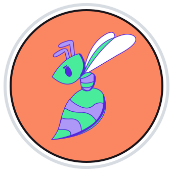

Marimbondos no ritmo
Leitura rítmica para fanfarra
Nível do microfoneAguardando início
Fique em silêncio na contagem e faça um “tá” a cada ataque. Sustente o som nas notas longas.

Leitura rítmica para fanfarra
Fique em silêncio na contagem e faça um “tá” a cada ataque. Sustente o som nas notas longas.